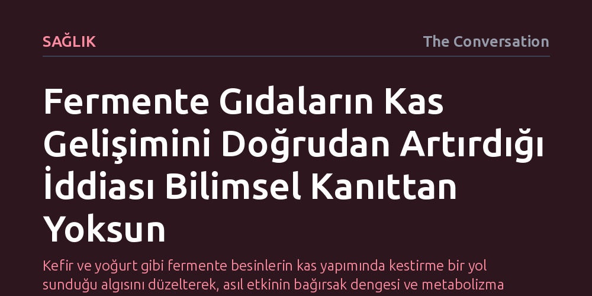

SAGLIK · The Conversation · 2026-10-10
Protein zengini fermente gıdalar bağırsak mikrobiyotasını ve iltihabı olumlu etkilese de, bunların kas kütlesi veya gücünü doğrudan artırdığına dair yeterli bilimsel kanıt bulunmuyor. Olası faydalar kası doğrudan büyütmekten ziyade metabolizma ve emilimi iyileştiren dolaylı yollardan kaynaklanıyor.
Kefir ve yoğurt gibi fermente besinlerin kas yapımında kestirme bir yol sunduğu algısını düzelterek, asıl etkinin bağırsak dengesi ve metabolizma üzerinden dolaylı biçimde işlediğini gösteriyor.

Spor salonlarında ve beslenme dünyasında kas gelişimi ile sindirim sağlığı uzun süre iki ayrı kompartıman gibi ele alındı. Kas inşa etmek isteyenler protein tozu ve ağırlık antrenmanlarına odaklanırken, bağırsak sağlığı daha çok lif tüketimi ve probiyotiklerle anılan bağımsız bir başlık olarak görüldü. Oysa son yıllarda yapılan biyomedikal araştırmalar, vücudun bu iki önemli parçası arasında "bağırsak-kas ekseni" adı verilen çift yönlü ve karmaşık bir iletişim ağı bulunduğunu gösteriyor.
Bu iletişim tek taraflı bir etkiyle sınırlı değil. Bağırsakta yaşayan trilyonlarca mikroorganizmadan oluşan mikrobiyota, besinlerin nasıl parçalanıp emileceğinden kan şekerinin dengelenmesine ve vücuttaki sistemik iltihabın kontrolüne kadar pek çok kritik süreci yönlendiriyor. Aynı zamanda kas dokusu da metabolik yan ürünler ve sinyal molekülleri salgılayarak bağırsak ortamına doğrudan geri bildirim gönderiyor. Dolayısıyla bir taraftaki aksaklık ya da iyileşme, diğerinin işleyişini kaçınılmaz olarak etkiliyor.
Bağırsak ile kas arasındaki bu köprü açığa çıktıkça, araştırmacıların dikkati hem protein yönünden zengin hem de fermente edilmiş gıdalara yöneldi. Yoğurt, kefir, süzme peynir ve tempeh gibi ürünler, mikrobiyal fermantasyon sürecinden geçtikleri için standart protein kaynaklarından farklı biyokimyasal özellikler taşıyor. Fermantasyon sırasında mikroorganizmalar, besindeki karmaşık protein zincirlerini önceden parçalayarak kasların ihtiyaç duyduğu amino asitlerin sindirilmesini ve vücutça emilmesini kolaylaştırabiliyor.
Fermantasyonun sunduğu avantaj yalnızca sindirim kolaylığıyla da sınırlı kalmıyor. Süreç boyunca açığa çıkan biyoaktif bileşikler, hücre hasarını engelleyen antioksidan ve iltihap baskılayıcı etkiler üretiyor. Üstelik bu ürünler, canlı mikroorganizmalar veya mikrop bileşenleri barındırarak doğrudan bağırsak florası ve bağışıklık sistemiyle etkileşime giriyor. Bu durum, protein zengini fermente gıdaların kas sağlığını beslemek için kusursuz birer aday gibi görünmesine yol açtı.
Fakat bilimsel literatür tarandığında, teorideki bu uyumun pratikte henüz net bir şekilde doğrulanmadığı görülüyor. Yayımlanan kapsamlı derleme, fermente proteinlerin bağırsak sağlığını, metabolik belirteçleri ve iltihap seviyelerini olumlu yönde etkileyebildiğini ortaya koysa da bu kazanımların doğrudan kas kütlesine veya kas kuvvetine dönüştüğünü gösteren kanıtların yok denecek kadar az olduğunu gösteriyor.
Daha da önemlisi, protein zengini fermente gıdaların kas protein sentezini (yani yeni kas dokusu inşa etme sürecini) fermente edilmemiş benzer proteinlere kıyasla daha fazla tetikleyip tetiklemediğini inceleyen neredeyse hiçbir doğrudan klinik çalışma bulunmuyor. Eldeki veriler, fermente gıdaların kaslara sağladığı varsayılan faydaların doğrudan bir doku uyarısından ziyade; bağırsak bariyerini güçlendirme, iltihabı azaltma ve besin emilimini optimize etme gibi dolaylı metabolik yollar üzerinden işlediğine işaret ediyor.
Doğrudan kanıt eksikliği, yoğurt veya kefirin beslenme menülerinden çıkarılması gerektiği anlamına gelmiyor. Bu gıdalar halen kaliteli amino asit profilleri, vitamin ve mineral içerikleri ile bağırsak florasını zenginleştiren mikrobiyal yapıları sayesinde dengeli bir beslenmenin en değerli parçaları arasında yer alıyor. Buradaki asıl mesele, fermente proteinleri kas yapımını hızlandıran mucizevi bir kestirme yol olarak görmemek.
Gelecekteki araştırmaların, aynı miktarda protein içeren fermente ve fermente edilmemiş gıdaları karşılaştıran sıkı kontrollü insan deneyleri yapması gerekiyor. Eşzamanlı olarak hem bağırsak mikrobiyotasında hem de kas dokusunda meydana gelen değişimler ölçülmeden, fermente proteinlerin üstün bir kas geliştirici olduğunu iddia etmek bilimsel açıdan temelsiz kalıyor.